Das folgende Bild zeigt das Interface des CSS-SNL-Debuggers. Der linke Bereich ist eine Baumstruktur und der rechte Bereich zeigt die Details für die ausgewählten Knoten. Einige allgemeine Infos stehen oben im rechten Bereich.

Der SNL-Debugger ist ein Werkzeug zur Diagnose der laufenden State-Programme und zur Verwaltung von PRR SNLEXEC.
Es kann Info von einem laufenden State-Programm abfragen, z.B. auflisten der State Sets und Variablen Sets
(sowohl zugewiesene als auch nicht zugewiesene), holen und setzen des Wertes einer Variablen, springen
in jeden Zustand eines State-Set, steuern des State-Set-Run-Modus: normal/suspended/single step.
Es kann auch ein laufendes State-Programm stoppen oder ein neues State-Programm starten, wenn dieses
übersetzt und in den IOC geladen ist.
Das folgende Bild zeigt das Interface des CSS-SNL-Debuggers.
Der linke Bereich ist eine Baumstruktur und der rechte Bereich zeigt die Details für die ausgewählten Knoten.
Einige allgemeine Infos stehen oben im rechten Bereich.
Der SNL Debugger ist ein Teil des IOCremoteManagement. kann aus dem CSS-Menu gestartet werden:
CSS->Diagnostic Tools->IOCremoteManagement. Zuerst wird links eine Liste von IOC-IP-Adressen gezeigt.
IP-Adressen sind konfigurierbar. Die im folgenden Bild gezeigten zwei IP-Adressen bilden ein redundantes IOC-Paar.
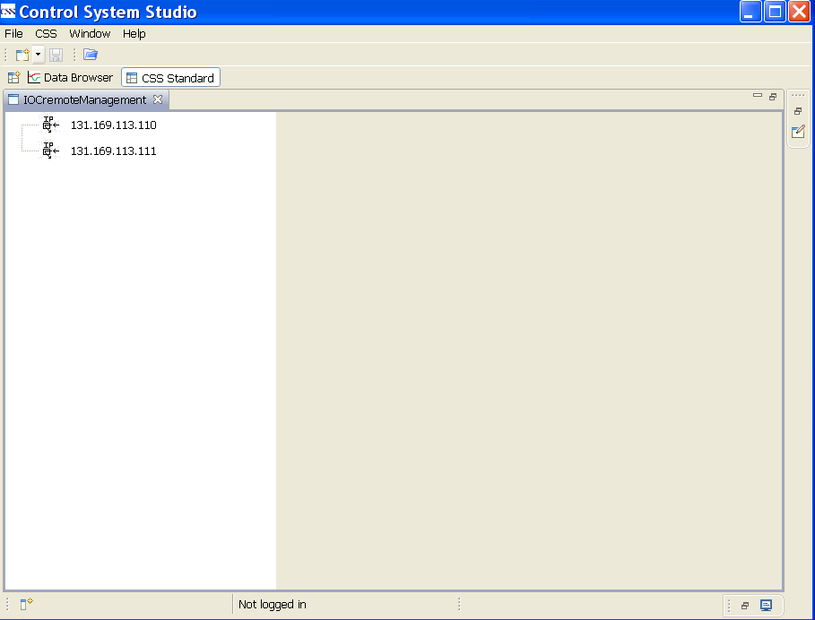
Nach dem Anklicken einer IP-Adresse werden zwei Zweige gezeigt: rmtManagement und snlDebugger.
rmtManagement steht für RMT Management, wird hier nicht beschrieben; snlDebugger steht für SNL Debugger.
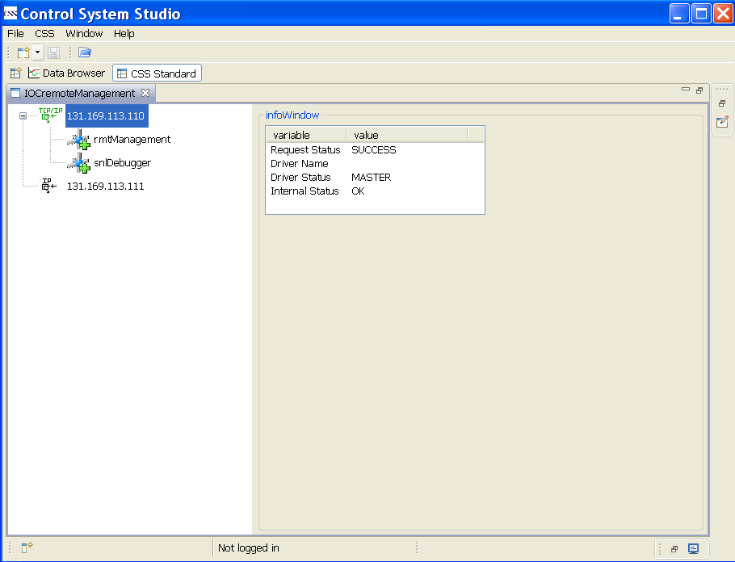
Nach dem Anklicken von snlDebugger verden drei Unterzweige und ein Blatt dargestellt :
snlListSP, snlReport und snlAction. Jeder Unterzweig hat seinen eigenen Unterzweig oder sein eigenes Blatt.
snlListSP dient zum Auflisten aller laufenden State-Programe.
snlReport ist eine Kommando-Sammlung zum Report des Status von SNLEXEC und der laufenden State-Programme.
snlAction ist eine Kommando-Sammlung zum Steuern des Verhaltens control the behavior related to SNLEXEC (???) und der
laufenden State-Programme. Die Details zu jedem Kommando werden in anderen Kapiteln beschrieben.
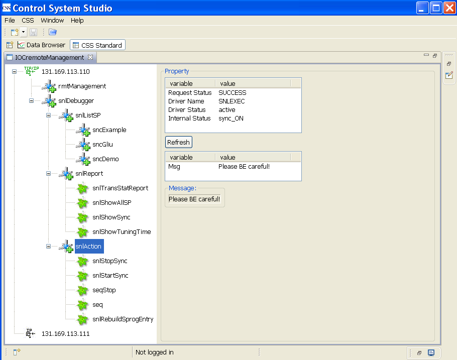
Man kann leicht eine Liste aller Variablen eines State-Programms aus dem Baum erhalten.
Statistic Info wird auf der rechten Seite des Interface gezeigt.
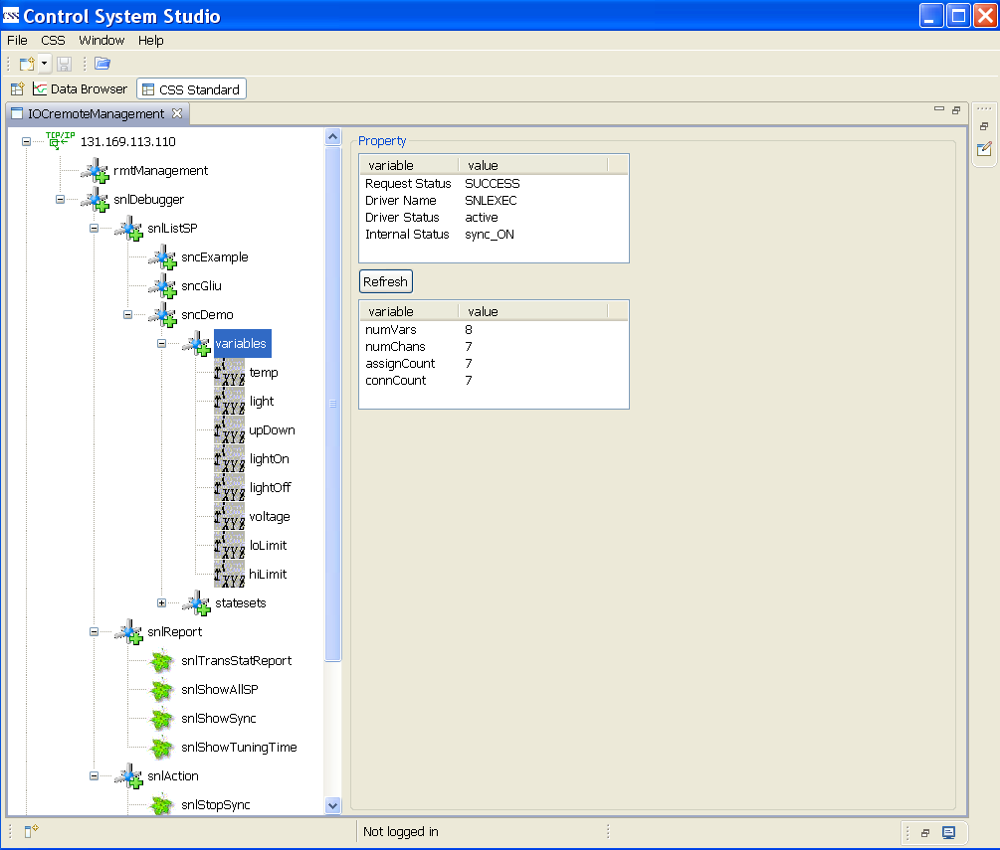
Es werden drei Eigenschaften für nicht-assigned Variablen gezeigt: assigned, type und value.

Wenn der IOV Master ist, können Variablenwerte direkt geändert werden; ansonsten erscheint eine
entsprechende Warnmeldung.

Ein oder mehrere Eigenschaften werden für assigned Variablen gezeigt: dbName.

Nach Auswahl eines Record-Namen kann durch Rechtsklick ein Popup-Menu geöffnet werden.

Man kann den CSS application Data Browser benutzen, um die Historie eines Records zu zeigen.
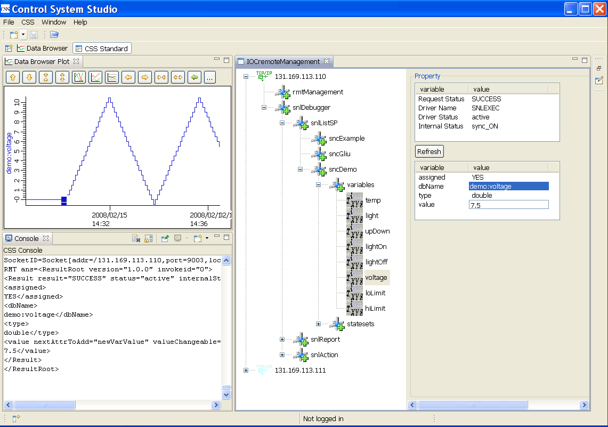
Es gibt acht Eigenschaften für den State-Set : threadName, ssRunControl, dbgRunState,
firstState, currentState, previousState, nextState und Msg. Es gibt Combo-Boxen für die
Eigenschaften ssRunControl und currentState.
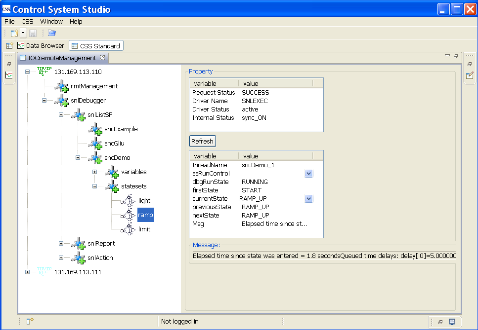
Man kann durch Auswahl in der currentState's Combo-Box zu jedem State des State-Sets springen,
vorausgesetzt, dass der IOC Master ist und der dbgRunState RUNNING ist.

Man kann den State-Set-Run-Mode über die ssRunControl-Combo-Box steuern,
vorausgesetzt, dass der IOC Master ist. dbgRunState sollte STOPPED für den Single-Step-Mode sein.
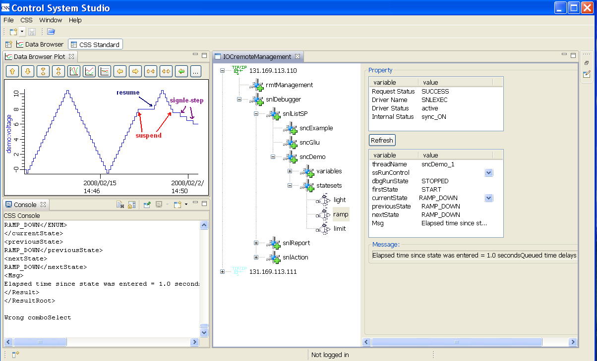
Es gibt vier Kommandos zum Report des Status von SNLEXEC und den laufenden State-Programmen:
snlTransStatReport, snlShowAllSP, snlShowSync, snlShowTuningTime.
snlTransStatReport dient zum Report der Datentransferstatistik zwischen Master-IOC und Slave-IOC.
"FullUpdateCount" ist die Anzahl der Updates.
"LastFullCycleTime" ist die Gesamtübertragungszeit für das letzte Update.
"LastFullSendCount" ist die Anzahl der gesendete Pakete für das letzte Update.
"LastFullSendBytes" ist die Anzahl der insgesamt gesendeten Bytes des letzten Updates.
Die Eigenschaften links sind leicht zu verstehen.
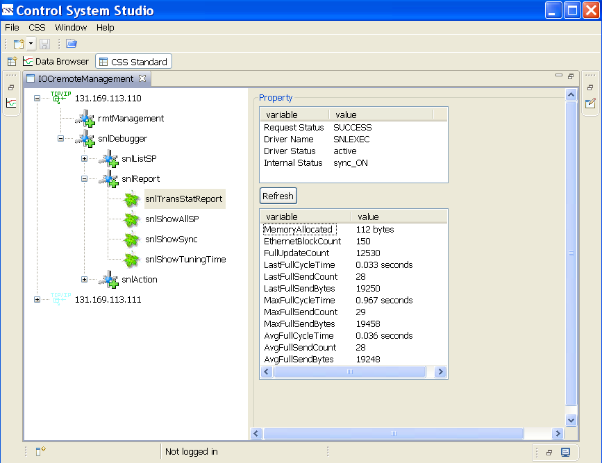
snlShowAllSP dient zum Anzeigen von Thread-ID, Thread-Name and State-Set-Name für die laufenden State-Programe.

snlShowSync dient zum Anzeigen des Synchronization-Status. Die Synchronization ist ON, wenn snlsyncHold FALSE ist,
ansonsten ist sie OFF.
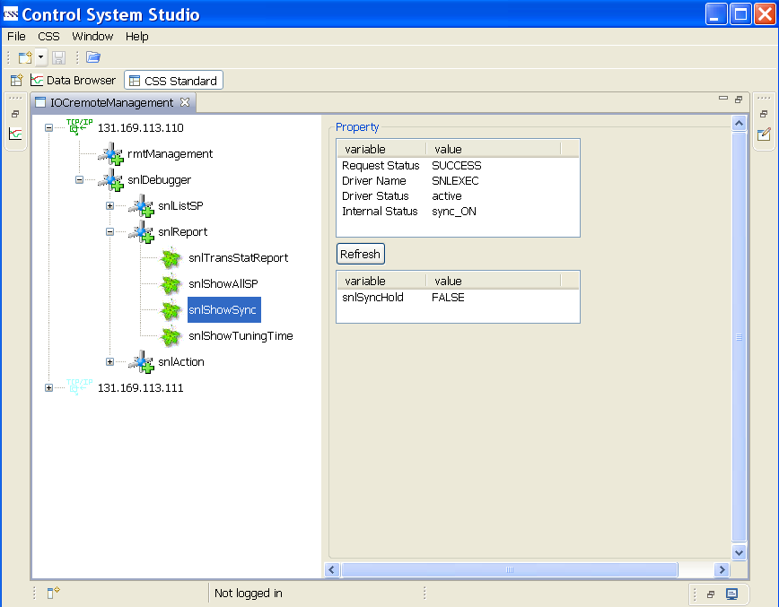
snlShowTuningTime zeigt einige Tuning-Time-Settings.
"snlUpdatePeriod" ist die Update-Periode, ist aktuell auf 1.0 Sekunde eingestellt.
Die �n Time-Settings können von SNL-Debugger-Benutzern ignoriert werden.

Es gibt fünf Kommandos zum Report des Status für snlEXEC und die laufenden State-Programe:
snlStopSync, snlStartSync, seqStop, seq, snlRebuildSprogEntry.
snlStopSync dient zum Stoppen der Synchronisation.
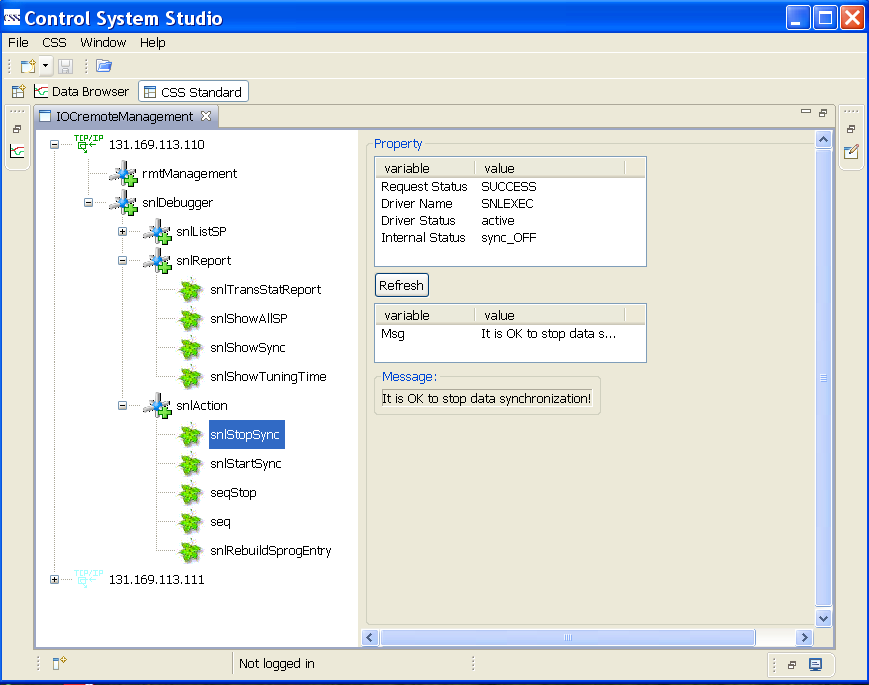
snlStartSync dient zum Starten der Synchronisation.
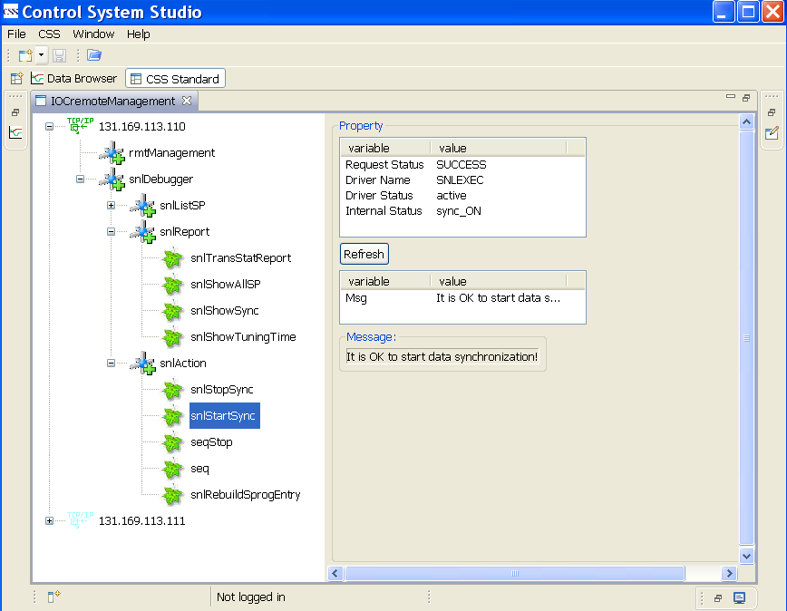
seqStop dient zum Stoppen eines laufenden State-Programms. Vorher muss die Synchronisation gestoppt werden.
Man sollte den Knopf "call it" anklicken, nachdem man den Thread mit der entsprechenden Combo-Box ausgewählt hat.
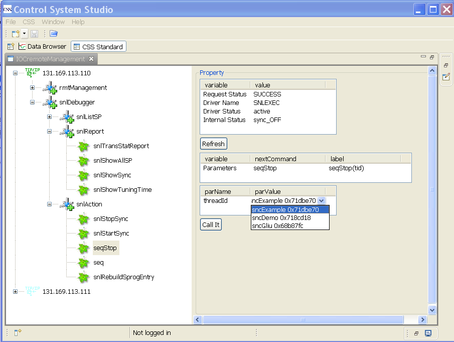
Mit dem Kommando snlShowAllSP kann man das Ergebnis checken. Der Thread-ID steht jetzt mit dem State-Programm "sncGliu"
in Beziehung und man kann sehen, dass das State-Programm verschwunden ist.

seq dient zum Start eines neuen State-Programms. Voraussetztungen sind, dass das State-Programm übersetzt und die Synchonisation
gestoppt ist. Man sollte den Knopf "call it" anklicken, nachdem man spName, macrosStr and stackSize eingegeben hat.
macrosStr und stackSize sind optional.

Man kann das Kommando snlShowAllSP benutzen, um das Ergebnis in ähnlicher Weise zu checken.
Wieder wird das State-Program "sncGliu" gezeigt.
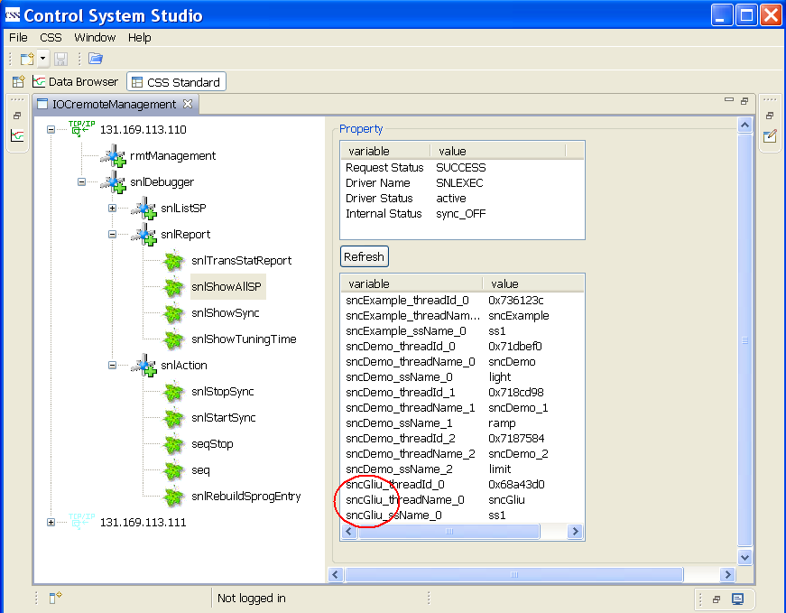
snlRebuildSprogEntry dient zum Rebuild der State-Program-Entry-Tabelle. Voraussetztung ist, dass die Synchronisation
gestoppt ist. Normalerweise brauch man dieses Kommando nicht.